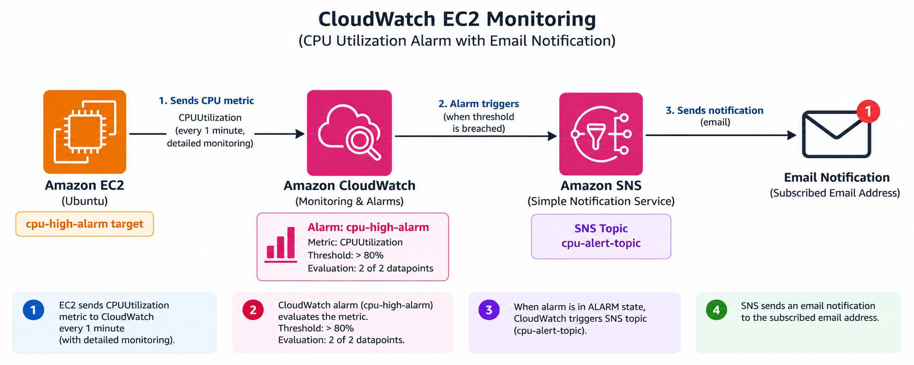
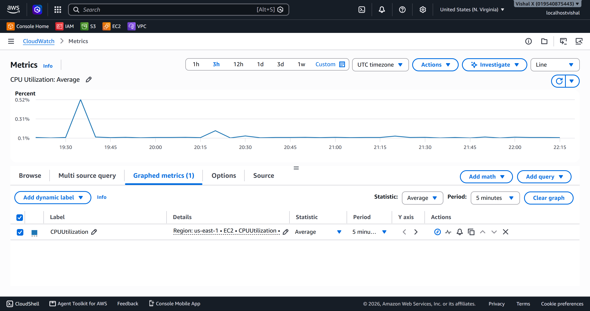
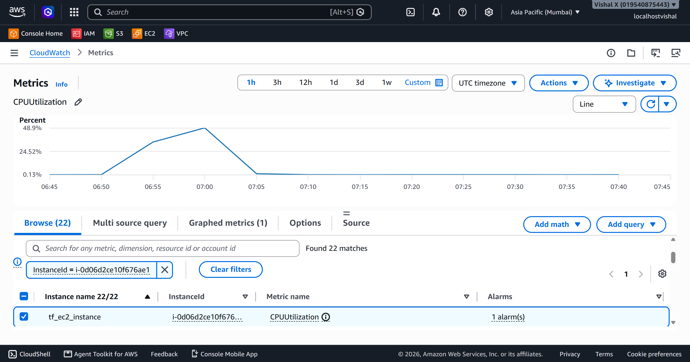
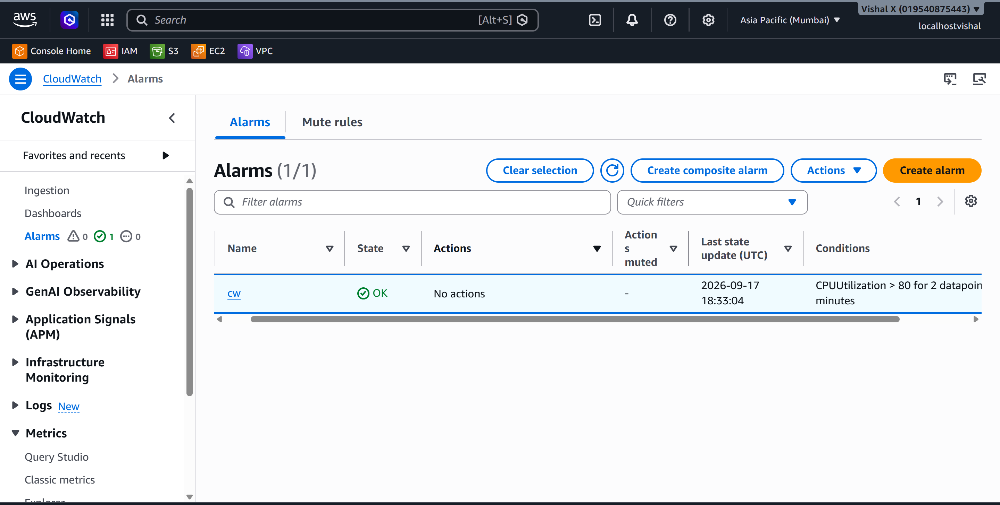
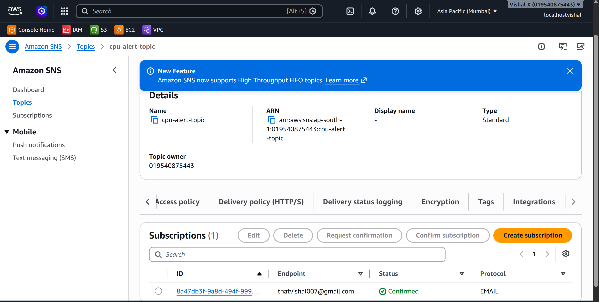
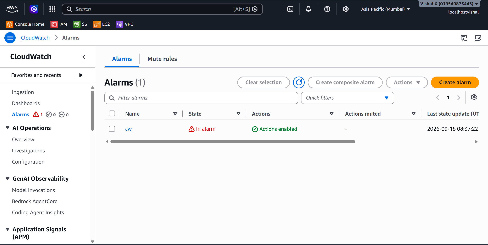
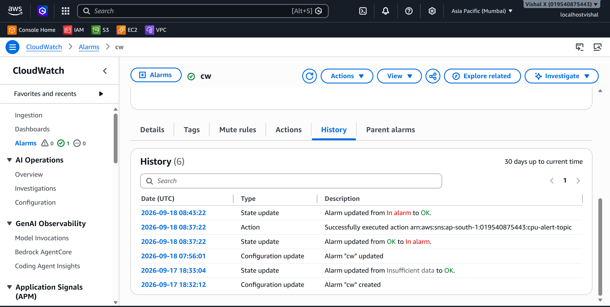

CloudWatch EC2 Monitoring
Tenth project. Set up real monitoring on an EC2 instance using CloudWatch — created an alarm, wired it to SNS for email notifications, then generated actual CPU load to trigger it. This is how you know something is wrong before users start complaining.
What I built
A CloudWatch alarm watching CPU utilization on an EC2 instance. When CPU goes above 80% for two consecutive minutes, the alarm fires and sends an email via SNS. I also generated load using the stress tool to actually trigger it and see the whole thing work end to end.

Why CloudWatch
Without monitoring, a server can be maxed out and I'd have no idea until something breaks. CloudWatch collects EC2 metrics automatically — no agent needed for basic metrics. Setting an alarm means the system tells me when something needs attention instead of me having to watch dashboards.
Services used
| Service | What I used it for |
|---|---|
| EC2 | The instance being monitored |
| CloudWatch | Collects metrics, evaluates the alarm condition |
| SNS | Sends the email notification when the alarm triggers |
Resources I created
| Resource | Value |
|---|---|
| Region | us-east-1 |
| EC2 Instance ID | i-05f8cbf078f8d5834 |
| CloudWatch Alarm | cw |
| SNS Topic ARN | arn:aws:sns:ap-south-1:019540875443:cpu-alert-topic |
Steps
1. Viewed CloudWatch metrics
- Open the CloudWatch console
- In the left sidebar click Metrics → All metrics
- Under AWS namespaces click EC2
- Click Per-Instance Metrics
- In the search box type the instance ID (
i-05f8cbf078f8d5834) and press Enter - The list filters to show all metrics for that instance — CPUUtilization, NetworkIn, NetworkOut, DiskReadOps, StatusCheckFailed, and more
Every EC2 instance sends these metrics automatically — no agent or setup needed.

2. Monitored CPU utilization
- Still on the Per-Instance Metrics page, tick the checkbox next to CPUUtilization for the instance
- A graph appears at the bottom of the page showing CPU over time
- The default time range is 3 hours — change it to 1h using the buttons at the top right of the graph for a tighter view
- At idle the CPU was sitting around 1–3%
Worth watching the baseline before picking a threshold — setting an alarm at 10% on a busy instance would fire constantly.

3. Created a CloudWatch alarm
- In the left sidebar click Alarms → All alarms → Create alarm
- Click Select metric
- Click EC2 → Per-Instance Metrics
- Search for the instance ID, tick CPUUtilization → Select metric
- On the Specify metric and conditions page:
- Statistic: Average
- Period: 1 minute
- Threshold type: Static
- Condition: Greater than
- Value:
80 - Scroll down to Additional configuration:
- Datapoints to alarm:
2out of2— this means CPU must stay above 80% for 2 consecutive 1-minute periods before the alarm fires, so a brief spike doesn't trigger it - Click Next

4. Configured SNS notifications
Still in the alarm wizard on the Configure actions page:
- Alarm state trigger: In alarm
- Send a notification to an SNS topic: select Create new topic
- Topic name:
cpu-alert-topic - Email endpoints: enter the email address to receive alerts
- Click Create topic
- Click Next
- Alarm name:
cpu-high-alarm - Click Next → Create alarm
Now go to the email inbox — AWS sends a confirmation email with subject AWS Notification - Subscription Confirmation. Click the Confirm subscription link inside it.
To verify: SNS → Topics → cpu-alert-topic → Subscriptions tab — status should show Confirmed. The alarm won't send emails until this step is done.

5. Triggered the alarm
SSH'd into the EC2 instance, then installed and ran the stress tool to max out CPU:
This runs for 5 minutes and pegs both vCPUs at 100%.
Back in the CloudWatch console:
1. Click Alarms → All alarms
2. The alarm cpu-high-alarm starts in OK (green) state
3. After 2 consecutive 1-minute periods above 80%, the state changes to In alarm (red)
4. The email notification arrived within a couple of minutes of the alarm firing

6. Investigated the metric
After the alarm fired, I checked what happened:
- CloudWatch → Metrics → EC2 → Per-Instance Metrics → tick CPUUtilization — the graph showed the spike clearly
- Clicked into the alarm (
cpu-high-alarm) → History tab — shows every state change with timestamps - To check system logs: EC2 → Instances → select the instance → Actions → Monitor and troubleshoot → Get system log
- Stopped the stress process (Ctrl+C in the SSH session) and watched CPU drop back to baseline on the graph
- After 2 consecutive periods below 80%, the alarm returned to OK state

7. Cleaned up
- CloudWatch → Alarms → All alarms → tick
cpu-high-alarm→ Actions → Delete → Delete - SNS → Topics → tick
cpu-alert-topic→ Delete → typedelete meto confirm → Delete - SNS → Subscriptions → if the email subscription still shows, tick it → Delete
Screenshots
| # | File | Description |
|---|---|---|
| 01 | screenshots/01-cloudwatch-metrics.png |
CloudWatch Per-Instance Metrics |
| 02 | screenshots/02-cpu-monitoring.png |
CPU utilization graph |
| 03 | screenshots/03-create-alarm.png |
Alarm creation with 80% threshold |
| 04 | screenshots/04-sns-notification.png |
SNS subscription confirmed |
| 05 | screenshots/05-trigger-alarm.png |
Alarm in ALARM state |
| 06 | screenshots/06-investigate-metric.png |
CPU back to normal |
| 07 | screenshots/07-cleanup.png |
Alarm and SNS topic deleted |
Commands
Things that can go wrong
| Problem | What caused it | How I fixed it |
|---|---|---|
| Alarm stays in INSUFFICIENT_DATA | Not enough data points yet | Waited a few minutes for metrics to populate |
| No email received | Subscription not confirmed | Checked inbox and clicked the confirmation link |
| CPU doesn't spike | stress not installed correctly | Checked install output, ran stress -v to verify |
| Alarm doesn't trigger | Threshold too high or period too long | Lowered threshold or reduced evaluation periods |
Security notes
- SNS topic only sends to confirmed email subscribers
- EC2 SSH access should be restricted to known IPs, not
0.0.0.0/0 - Basic EC2 metrics in CloudWatch don't require any extra IAM permissions
Cost
CloudWatch basic EC2 metrics are free (5-minute intervals). Detailed monitoring (1-minute intervals) costs extra. SNS email notifications are free for the first 1,000 per month. Delete the alarm and SNS topic after the exercise.
What I learned
- EC2 sends metrics to CloudWatch automatically — no agent or setup needed
- Watching baseline CPU before setting a threshold makes the alarm more meaningful
- The 2-out-of-2 datapoints setting prevents false alarms from brief spikes
- SNS subscription confirmation is required before notifications work
- CloudWatch alarms have three states: OK, In alarm, Insufficient data